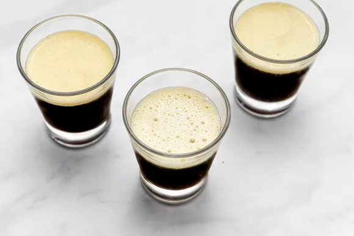

To the average Westerner, the thought of a cup of coffee mixed with any bit of egg might sound odd, and possibly unpleasant. But coffee with eggs is not uncommon in other cultures, as adding them to coffee makes a rich and delicious beverage, ideal for a pick-me-up and a flavorful boost of energy. The Vietnamese take on this treat makes for a dessert coffee, a silky concoction comprised of a sweet eggy foam floating atop of a cup of dark brew. Imagine a tiramisu in beverage form and you will likely get pretty close to the vibe of a good egg coffee. Just a few minutes of work might make you a believer in egg coffee, as its delicious flavor and texture might make your morning coffee look in need of that oomph.
Norwegians and the Swedish have their version, mixing the eggs and shells with the ground coffee and boiling it with water. For the Vietnamese version, "custard coffee” might be more accurate, as this thick, strong, and dark coffee is topped with a sweet, light, and airy foam of egg yolk and condensed milk. The opposing flavors and textures are what make the egg coffee a favorite, so using a strong brew is recommended, as is beating the yolks and condensed milk to an airy foam.